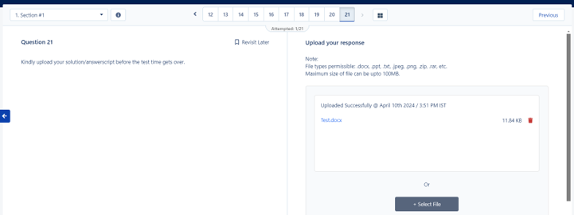
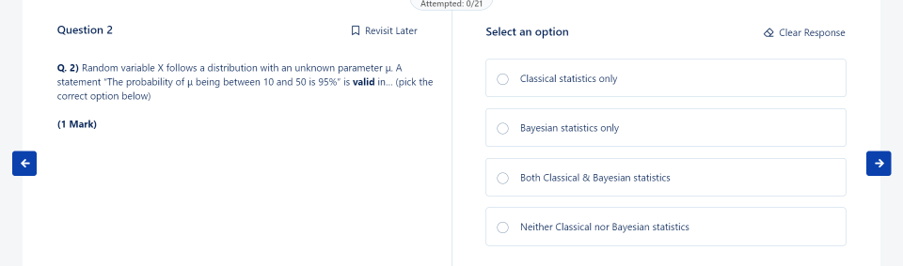

Frequently Asked Questions(FAQs)
General
01 I have passed ACET. What do I do next? +
If you have passed the ACET, this means you are eligible for Candidate membership of the IAI. Click on the following link to fill the Online Admission related details Click Here
02 Where can I find more information on the syllabus? +
Syllabus may be obtained from Institute’s website Click Here
03 How many subjects can I attempt in one examination cycle? +
There is no limit; Candidates can register for multiple exams in an exam session provided they do not fall on same date and time.
04 What are the dates of actuarial exams? +
Actuarial exams are conducted twice a year – usually May and November. Examination dates for the upcoming exams are posted on the Institute website Click Herefor further details.
05 From where can I appear for an Actuarial Exams? +
Institute has taken the initiative of conducting Centre based online Actuarial exams November 2026 onwards.
Click Hereto view the centre list.
* If a candidate wishes to request an examination centre other than those currently available, they may raise a Centre Request through their Member Login > Centre Request Form. The Institute will review the request and take the necessary action, subject to feasibility and availability.
06 Do the answer scripts accrue negative marking? +
No, there is no negative marking.
07 How does the Institute ensure that examination marking is fair, consistent and accurate before declaring the final results? +
The Institute follows a structured marking and review process to ensure consistency, fairness, and transparency in the assessment of examination answer scripts, in accordance with the applicable Pass Mark Rules for the respective subject and level.
Each answer script is independently assessed by two examiners with further review by a Review Examiner, wherever applicable as part of the Institute’s quality assurance process.
For scripts not referred to a Review Examiner, the average of the marks awarded by the two examiners is considered the final mark; where a script is referred for review the Review Examiner’s marks are considered final for determining the candidate’s result.
08 What is the pattern of the examinations - is it objective or subjective? +
Beginning November 2025 examinations, the assessments for CB1, CB2, CB3, CS1A, CS2A, CM1A, and CM2A will consist of both Multiple-Choice Questions (MCQs) and descriptive (non-MCQ) components. The MCQ section will account for a minimum of 20% and a maximum of 30% of the total marks, while the remaining marks will be allocated to the descriptive/subjective section.
09 How do I prepare myself for the exams – is there a provision for coaching at IAI? +
Institute has a robust mechanism for coaching and counselling our Candidates. Click Hereto view the details related to coaching.
10 Which order I should follow when sitting for exams? +
While there is no prescribed order, it is seen that starting the actuarial exams with Core principles works well in easing the Candidates’ understanding and logical follow through with the exam rigour. A general thumb rule based on trends indicates that Candidates follow a numerical order. It may be worth noting that:
CB1 – Business Finance assumes knowledge of CM1
CS2 – Actuarial Statistics assumes knowledge of CS1
CM2 – Economic Modelling assumes knowledge of CS1, CS2, CM1 and CB2
CB3- Business Management has no formal prerequisites, but taking it early can support better understanding of the business and professional context of actuarial work
- You may also consider your academic background when selecting subjects. Typically preferred choices based on education background have been:
| Academic Background | Subjects that may be considered |
|---|---|
| Management | CB3 |
| Mathematics / Engineering | CM1 |
| Statistics | CS1 and CS2 |
| Economics | CB2 |
| Accounts / Commerce | CB1 |
11 11. Is there a compulsory order for Core Principles subjects? +
There is no compulsory order in which Core Principles subjects must be studied or attempted. The subject numbering broadly represents an order that may be appropriate for Candidate working in life insurance or pensions.
You may choose a different sequence depending on their area of interest or career:
- Candidates working in general insurance may prefer to take CS2 after CM1.
- Candidates working in investment may prefer to take CB2 and CM2 before CS2 and CM1.
- CB3 can be taken at any stage and may be particularly useful early in the qualification, as it develops an understanding of business-related solutions and practical, work-based skills.
- Ultimately, candidates should select their examination sequence based on their academic background, prior knowledge, area of actuarial interest, and individual study plan.
12 How much time does it take to prepare for a particular exam? +
- Candidates - The time required to prepare for an examination varies from candidate to candidate and depends on factors such as individual commitment, prior knowledge, academic background and study approach. However, based on the experience of successful Candidates, the following may be considered as a broad guide to the intensive study hours generally required:
- Core Principles (CS1 & CS2, CM1 & CM2, CB1 & CB2): Approximately 125–150 hours, depending on the candidate’s prior educational background and familiarity with the subject.
- Business Management (CB3): At least 20 hours.
- Actuarial Practice (CP1): Approximately 400 hours.
- Model Practice (CP2): Approximately 50 hours.
- Communication Practice (CP3): Approximately 50 hours.
- Specialist Principles (SP): Approximately 200 hours.
- Specialist Applications (SA): Approximately 300 hours.
Note: These figures are intended as indicative guidelines only, and candidates should plan their preparation based on their individual circumstances and level of familiarity with the subject.
13 What is considered as prior knowledge during CP2/CP3 examination? +
Candidates- For CP2 and CP3, Candidates are expected to have prior knowledge of the relevant CS, CM and CB subjects.
- Where a question requires any information beyond the assumed knowledge from these subjects, the relevant additional information will be provided within the question paper, wherever applicable.
14 Can I appear for CP1 in the beginning? +
There is no minimum eligibility requirement for attempting CP1. However, Candidates may find it more beneficial - to clear all Core Principle subjects before attempting CP1.
15 What is the eligibility for applying for CP2 & CP3 subjects? +
There are no pre-requisites of clearing other subject papers in order to register for CP2 & CP3.
16 Is there a Policy for Differently Abled Candidates -appearing for - the Examination? +
Yes, Institute has a policy for differently abled candidates that outlines the applicable provisions. Candidates may refer the below link: Click Herefor details.
17 Can I use an External Calculator from - IAI approved list during online examination? +
Yes, you may use scientific calculators during the examination, as applicable. However, only the following models from the IAI approved list are permitted:
- Casio FX-82 MS / SOLAR / SX Plus / ES (with or without any suffix)
- Casio FX-83 (ES/MS) (with or without any suffix)
- Casio FX-85 (ES/MS) (with or without any suffix)
- Casio FX-220 Plus
- Casio FX-350 MS
- Casio FX-570 MS
- Canon F-502 G
- Canon F-715 S / SG
- Canon F-720i
- HP 10s+
- Sharp EL-501 X
- Sharp EL-503 W
- Sharp EL-506 X / W
- Sharp EL-509 X / W
- Sharp EL-510 RN
- Sharp EL-520 X / W
- Sharp EL-531 XH / XG / WH (with or without any suffix)
- TI-30X IIS / IIB
- TI-30 eco RS / Xa
- TI-36X II
- Texas Instruments BA II Plus (with or without any suffix)
- Texas Instruments TI-30 Plus (with or without any suffix)
- Hewlett Packard HP12c (with or without any suffix)
Please note: You will not be permitted to use any other model of calculator during the examination.
You may be required to show the calculator to the invigilator for verification and validation during the examination.
18 How long does it take to become an Actuary? Is there a specific timeframe within which the examinations must be completed? +
There is no fixed duration for completing the Actuarial. Candidates are free to appear for the examinations at a pace that suits their individual circumstances. 13 subjects are prescribed to be cleared before one is awarded the Fellowship and calls for continued and sustained efforts to complete the course. Additionally, you need a minimum of three years’ relevant work experience to qualify as a Fellow and must have successfully attended the India Fellowship Seminar (IFS), which must be valid at the time of admission as a Fellow (Validity - to be admitted as FIAI within 24 Months - counted from the month immediately succeeding the month of successful attending IFS Seminar). Considering the examination requirements, work experience, and other Fellowship criteria, the typical timeframe to qualify as an Actuary in recent years has been approximately 5–8 years.
19 Do I need to work before I qualify? How do I work as an actuary if I have not yet qualified? +
Yes.To qualify as a Fellow, you are required to have a minimum of three years of relevant work experience in an Actuarial field. Almost all reputable actuarial employers offers attractive study support programs to support your development and growth. These may include study leave for preparing for and appearing in examinations, mentoring and guidance from by senior and experience colleagues and financial assistance towards as well as financial support. Actuarial qualification is a professional qualification, and gaining relevant practical work experience alongside your studies is an important part of the qualification journey. Typically, -once you have cleared two to four core technical subjects, it is advisable to start exploring - your preferred career options and secure an opportunity in actuarial field.
20 Where and how can I get a job? +
There are several ways to find a job in the actuarial filed.
- The Institute’s website provides a list of potential actuarial employers in India.
- Career opportunities are regularly shared in the Actuary India magazine as well posted on the Institute’s website. Many reputed Insurance companies and actuarial consultancies - hire Candidates for entry level actuarial positions, Candidates open to University graduates with no or very few actuarial exams pass.
Candidates- The Institute also has a Placement Cell that helps members find their first job. It provides guidance and connects Candidates with different actuarial employers. The Placement Cell also helps Candidates understand the skills and training required for available job opportunities. Members can register with the Placement Cell to get support for finding a job or changing jobs.
Kindly contact Ms. Binita Rautela atbinita@actuariesindia.org / +912262433342 for placement support
21 Can I skip an exam or choose not to appear a particular exam session? +
Yes, you can. However, you must ensure that your IAI membership remains active and up to date.
22 What certifications do I get after clearing the various levels? +
You can find detailed information regarding the certifications is available at the Institute’s website Types of Membership
23 What if I fail to appear in either of Paper A orPaper B for subjects CS1, CS2, CM1, CM2, CP1 and CP2? +
Result will be Absent for respective subject.
24 Are the examinations conducted in an Open-Book format? +
No, this is a closed book examination.
25 Is there a change in CB3 – Business Management exam format? +
Yes. From November 2024, CB3 – Business Management exam is aligned with the actuarial examination process. This change eliminates the pre-requisite of Business game and pre-course assignment before the exam. The exam consists of multiple-choice questions (MCQs) and has a duration of 90 minutes.
26 How many attempts do I get for CB3 – Business Management under new exam format? +
From November 2024, Candidate gets one attempt per exam session. If a Candidate does not pass the exam, they can register and appear for the exam again in a subsequent session, just like other actuarial exams.
Examination Guidelines
27 Where can I find detailed information on how to appear for the Actuarial Examination? +
Detailed information regarding the examination process, instructions, rules, and guidelines is available in the Candidate Guide for Actuarial Examination.
28 What is the duration of the examination? +
For centre Based online Examination, each paper is 3 hours and 15 minutes, except CS1B, CS2B, CM1B & CM2B each which are 1 hour and 45 minutes and CB3 will be of90 minutes
For Paper A & B of CS, CM and CP2, Candidates must keep track of the the exam timer themselves. An additional 15 minutes is provided for uploading the answer script and the upload option will be available within the platform. Any written work done in- the answer script during additional 15 minutes may lead to loss of attempt or failure in uploading the answer script.
The last successfully uploaded answer script in exam platform will be considered for evaluation. Reference image is as below:

29 Is there any risk of examination misconduct by Candidates while writing examinations online? +
Yes. Candidates must follow the Candidate Guide for Actuarial Examination and all examination rules. The Institute reserves the right to take appropriate action if any misconduct is identified during or after the examination.
30 Can I use Actuarial Table during examination? +
You must bring your own actuarial tables to the Examination centre for the subjects where they are applicable. The Institute will not provide actuarial tables. The actuarial table should be free from any annotation,markings - or any pre-written loose sheets attached to it. -The Invigilator may ask you to show the Actaurial table book for verification before or during the examination. (Note: Print or xerox copy is not allowed)
31 How - should I write the solutions or responses to the questions? +
The approach for writing solutions or responses may vary by subject. The subject wise approach is provided below:
| Subject | Approach to Write Solution |
|---|---|
| CB1, CB2, CB3 |
|
| CS & CM (Paper A) |
|
| CS (Paper B) | To copy & paste the R codes and output in an MS Word document and upload in the exam platform. |
| CP2, CM (Paper B) | Download the Solution Template (Excel) embedded within the question and then upload the worked solution template back to the exam platform. |
| CP3, SP, SA | To type answers in Text Editor within the exam platform. |
32 How should I write the solutions or responses to MCQ type questions? +
Select the correct option(s) from the choices displayed - on right hand side of the examination screen.

33 Is there any specific font or font size to use while answering through online mode of Examination? Can I use bold, italics or coloured text in my answer scripts? +
It is recommended to use default font size.
34 What happens if the examination platform fails during the examination? +
If the examination platform fails due to an issue not related to the candidate’s hardware, software or power or internet connectivity, the Institute will make reasonable efforts to provide an alternative arrangement.. If this is not possible, the Institute may reschedule the examination to another date or cancel the session or provide refund of examination fees, as appropriate.
35 What can I keep with me during the examination? +
The following are permitted during the examination:
- Personal Keyboard (optional)
- Personal Wired Mouse (optional)
- Hardcopy of Hall ticket
- Actuarial table book, where applicable
- Scientific calculator, where applicable
- Blank loose sheets for rough work.
- Pen/Pencil for writing on the loose sheets
- One government-issued ID for verification
The following are strictly not allowed during the examination: Any form of personal consumables, mobile phone , smart watches, smart glasses, handsfree devices, headsets/ earphones etc. or any other electronic gadgets.
36 What if I do not have a Government approved ID card and the hard copy of the hall ticket - with me at the time of Examination? +
You will not be allowed to appear for examination and may lose your examination attempt.
37 Can I request - a change to my examination start time? +
No. Examinations will be conducted as per the published Exam Timetable, and requests to change the examination time will not be accepted.
38 How to access "R Studio" for CS Paper B Subjects during examination? +
RStudio will be available on the local computer system provided at the examination centre and can be accessed during the examination.
39 How can I copy/paste codes and output from R Studio to MS Word? +
Type the codes and Output in “R Studio” and simply copy the content using Ctrl + C and to paste using Ctrl + V in MS Word document. In case Ctrl + V is not responding, try pasting by clicking the Paste à Paste Special à Values option under Home tab within the Command Bar in MS Word application.
40 How to access "Excel" or "Word" application during examination? +
Microsoft Excel or Word can be accessed and used on the local computer system provided at the examination centre. Note: This is only applicable for CM1A,CM2A,CS1A,CS2A, CS1B, CS2B, CM1B, CM2B and CP2 Subjects.
41 How to toggle between the Examination Window and MS Word/Excel during the examination? +
You can use ALT+TAB to toggle between the Examination Window and MS Word/ MS Excel/ RStudio during the examination.
Note: This is only applicable for CM1A,CM2A,CS1A, CS2A, CS1B, CS2B, CM1B, CM2B and CP2 Subjects.
42 How to insert Equations/Symbols in solution typing area? +
You can insert equation in solution typing area using the equation editor available in the exam platform for all subjects except for CS Series, CM Series and CP2 Subject. Kindly refer following link - https://support.mettl.com/portal/en/kb/articles/how-to-attempt-math-and-chemistry-type-questions-in-the-test
43 Will there be questions in CP1, CP3, SP and SA subjects that require graphs and diagrams in the solution? +
Our examiners have aligned the question paper pattern where you will not have a mandatory requirement to use graphs/diagrams to support your answers.
44 What should I do if I am not able to locate the file for upload? +
If your answerscript is in a Word or Excel file, open it and go to File > Info. The file location is usually displayed at the top or under the document properties section.
45 What should I do if I am unable to upload my answer script in the last 15 minutes of the examination? +
The last 15 minutes of the examination are reserved only to upload the answerscript. You must use this time only to upload the answerscript. Any working done or making changes to your answerscript during last 15 minutes may lead to loss of attempt or failure to upload the answer script. The last successfully uploaded answer script in the examination platform -will be considered for evaluation.
If you face any technical issue that prevents you from uploading your script, immediately contact the available Invigilator for assistance.
Note: Do not seek support from any other member including friends or family for uploading the answer script or resolving any technical issue.